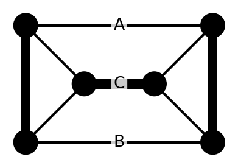
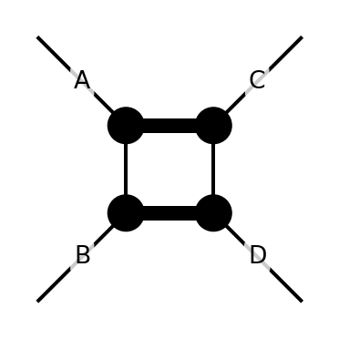

Now that the structural alphabet of our molecular processor is complete, it is time to unleash its true computational potential. Yet, the moment we begin pushing these carbon networks, an astonishing realization strikes: we are no longer playing by the established rules of “textbook” quantum computing.
Now that the structural alphabet of our molecular processor is complete, it is time to unleash its true computational potential.
Yet, the moment we begin pushing these carbon networks, an astonishing realization strikes: we are no longer playing by the established rules of “textbook” quantum computing.
Mainstream quantum architectures (such as transmon qubits, trapped ions, or photonic circuits) operate within a rigid, sequential paradigm:
* You initialize a discrete register of isolated qubits,
* You apply a unidirectional, clock-driven cascade of discrete unitary logic gates (\(U_1, U_2, \dots, U_n\)),
* And you collapse the state through projective measurement at the very end.
Our conjugated carbon networks dismantle these constraints. Because computation is embodied in a continuous, delocalized electron cloud (\(\pi\)-resonance) anchored in a physical molecular graph, phenomena emerge that have no equivalent in classical or standard quantum models.
Chief among these anomalies is the intrinsic ability to compute backwards.
Reverse Computing
One of the most extraordinary properties of conjugated molecular networks is that they possess no intrinsic, hardwired notion of “inputs” or “outputs.”
A chemical bond is simply a physical degree of freedom. It is strictly the observer who chooses to designate certain peripheral bonds as “inputs” (where boundary constraints are imposed) and others as “outputs” (where the resulting state is read).
Consequently, there is zero difference in computational time between evaluating a function forward or inverting it backward.
For a computer scientist accustomed to classical, sequential algorithmic complexity—where multiplying two numbers takes microseconds while factoring them can take millennia—this realization is deeply counterintuitive, almost disorienting.
Physical Compute Time: Bounded by Molecular Diameter
In an algorithmic circuit, execution time scales with the depth of the gate cascade (\(O(\text{depth})\)).
In a molecular network, however, computation is not an execution loop; it is a physical wave relaxation process. The entire \(\pi\)-electron cloud redistributes collectively across the carbon framework.
Therefore, the computational time (\(t_{\text{compute}}\)) is physically bounded strictly by the effective spatial diameter (\(D\)) of the molecular graph divided by the Fermi velocity of the \(\pi\)-electrons (\(v_F \approx 10^6\ \text{m/s}\)):
\[t_{\text{compute}} \approx \frac{D}{v_F}\]
Across a molecular processor spanning tens of nanometers, this relaxation settles on the scale of femtoseconds (\(10^{-15}\ \text{s}\))—whether computing forward or backward. The arrow of computational complexity dissolves into geometric boundary relaxation.
Inverting the “Letter Envelope”
Let us ground this principle in our familiar “Letter Envelope” molecule.
Earlier, we treated bonds \(A\) and \(B\) as inputs and bond \(C\) as the XNOR output. Now, let us deliberately flip the roles:
1. We clamp the former output bond \(C\) to state “1” (imposing this as our boundary condition).
2. We step back and observe the resulting states at the former input bonds \(A\) and \(B\).
Code
b6.role="input"b6.state_type="fixed"b6.order="double"all_resonances = mol.resonance()for i, res_mol inenumerate(all_resonances): res_mol.draw()


What emerges at the terminals \(A\) and \(B\) is an exact coherent superposition of all valid input combinations that satisfy the condition \(C = 1\):
The molecule does not perform trial-and-error backtracking. The carbon network natively filters out all inconsistent configurations (“01” and “10”), letting only the valid solution manifold resonate.
Measurement as a Topological Filter
This requires us to fundamentally redefine what a “measurement” means in molecular computing:
In standard textbook quantum computing, measurement is modeled as a destructive, projective von Neumann collapse. You roll a quantum die, hope you sample the right outcome, and repeat the experiment thousands of times (shots) to reconstruct a probability distribution.
In our molecular architecture, measurement is not a lottery; it is a resonant boundary filter.
Much like acoustic standing waves in an organ pipe:
* Clamping the output terminal is equivalent to closing or opening the pipe’s acoustic boundaries.
* The wave equation inside the carbon cavity cannot sustain frequencies or configurations that violate these physical boundary conditions.
* The wrong answers are not “sampled and discarded probabilistically”; they are physically prohibited from existing as stationary modes within the cavity.
The correct input states emerge directly as the only allowed harmonic modes of the molecule.
The Verdict: Carbon Bonds Are Not Qubits
This marks the definitive departure from the conventional quantum paradigm:
A standard quantum circuit requires a growing overhead of ancillary qubits and complex uncomputation cycles to reverse a non-bijective gate without violating unitarity.
A standard quantum circuit suffers from probabilistic measurement misses, requiring iterative amplitude amplification (such as Grover’s algorithm).
Our carbon-carbon bonds require zero ancillary overhead and eliminate the probabilistic lottery through boundary-condition filtering.
The conclusion is inescapable: conjugated carbon bonds are not qubits.
Protobits: The Fundamental Substrate of Information
Up to this point, we have formulated the states of our carbon bonds using the language of p-bits (probabilistic bits). While mathematically useful, this probabilistic framing captures only a fraction of their true physical capability.
In modern spintronics, classical p-bits are used to construct what researchers call a “poor man’s quantum computer”—stochastic hardware capable of sampling complex probability distributions and performing simulated annealing, but fundamentally lacking genuine quantum superposition and entanglement.
Conjugated carbon bonds, however, are inherently quantum-mechanical entities. Their delocalized \(\pi\)-electron clouds routinely support true quantum superposition (resonance) and macroscopic entanglement across the molecular framework.
Qubits as a Sub-Phenomenon
Because our molecular architecture achieves universal logic, it is entirely possible to construct arithmetic hardware—multipliers and adders—purely out of conjugated carbon gates.
Using this capability, one could build a full processing unit from carbon molecules, executing binary arithmetic to multiply complex floating-point matrices just like a classical supercomputer simulating quantum mechanics.
However, there is a fundamental architectural distinction in how the computation is handled:
On a classical supercomputer, simulating \(N\) qubits forces the software to construct and multiply monolithic, global matrices that scale exponentially (\(2^N \times 2^N\)) via massive tensor products, rapidly exhausting memory.
In our molecular architecture, we avoid this exponential memory explosion entirely. Because the logic is physically mapped across the carbon network, the hardware only ever computes with small, constant-sized matrices circuits corresponding strictly to the local logic gates involved. The physical wiring of the molecular circuit naturally routes the states superpositions without requiring an exponentially bloated global matrix.
Measuring the terminal registers at the end of these complex matrix-multiplication circuits yields the exact statistical distributions of textbook quantum mechanics.
To be sure, assembling millions of molecular gates just to crunch floating-point complex numbers is an absurdly inefficient way to implement a qubit. Yet, it serves as a rigorous theoretical existence proof:
Because conjugated carbon bonds can build the machinery to simulate complex quantum state vectors, carbon-carbon bonds natively encompass all computational capabilities of qubits.
In fact, as we will demonstrate in an upcoming post, the minimal physical threshold required to natively synthesize a single, fully coherent quantum qubit is exactly 3 conjugated carbon-carbon bonds.
The Hierarchy of Information: A True Superset
This leads us to a profound theoretical separation:
* A standard qubit cannot emulate a bidirectional conjugated carbon bond without an unbounded overhead of ancillary registers and loss of spatial invariance.
* A network of conjugated carbon bonds can natively emulate a qubit.
In computational complexity theory, when system \(A\) can simulate system \(B\), but system \(B\) cannot simulate system \(A\) under bounded resources, it establishes that \(A\) is a strict superset of \(B\).
Step back and look at the grand architectural portrait of information that emerges:
1. At the fundamental layer: Conjugated carbon bonds operate as native quantum primitives.
2. Coherent aggregation: Grouping 3 coupled carbon bonds synthesizes a textbook Qubit (in the \(\mathbb{C}^2\) state space).
3. Decoherence: When a carbon bond loses its quantum phase coherence to environmental thermal noise, it gracefully degrades into a p-bit (probabilistic bit).
4. Measurement / Clamping: When a p-bit or a qubit is projected through a macroscopic boundary measurement, it collapses into a deterministic Classical Bit (\(0\) or \(1\)).
Do you see the relationship?
Conjugated carbon bonds are the generative root at the base of the entire hierarchy. They are the physical engine from which all other forms of computation naturally emerge.
For this reason, we introduce this new primitive to the scientific lexicon as the “Protobit”—from the Greek proto- (first, primitive, original) and bit (binary unit).
The Protobit is the physical ancestor of digital and quantum information alike.
Why Not Dirac Notation?
Readers familiar with quantum literature might find it surprising that Dirac’s bra-ket notation (\(\langle \psi | \text{ and } | \psi \rangle\)) is intentionally absent throughout this work.
This is a deliberate architectural and pedagogical choice, driven by several practical reasons:
Protobits Are Not Qubits: Dirac notation was tailored for isolated state vectors in Hilbert space (\(\mathbb{C}^2\)). While one could technically bend and stretch the bra-ket formalism to fit protobits, standard matrix and set algebra already handles the molecular transition networks flawlessly. In fact, standard linear algebra is more compact, visually transparent, and universally understood across scientific disciplines.
The “Right-to-Left” Cognitive Tax: Standard quantum mechanics writes operators acting on kets from right to left (\(U |\psi\rangle\)), while physical circuits and computer algorithms are read strictly from left to right (Input \(\rightarrow\) Gate \(\rightarrow\) Output). This inverted convention adds a needless layer of mental gymnastics when translating a visual graph into a formal equation. While there is no universal law governing writing direction, we should at least align our algebraic syntax with the visual flow of our physical circuit diagrams.
Finite Molecular Graphs vs. Infinite Dimensions: Dirac’s bra-ket formalism was historically engineered to bridge discrete states with infinite-dimensional, continuous Hilbert spaces (such as position wavefunctions \(\psi(x)\)). In our framework, we operate strictly over finite, discrete networks of carbon bonds spanning well-defined \(2^M \times 2^N\) configuration spaces. We have no practical need for Schrödinger’s infinite-dimensional apparatus when compact, finite-dimensional matrix algebra models the discrete topology with far greater precision.
The Multi-Product Dilemma: In our Conjugated Carbon Computing (CCC) framework, three distinct matrix operations are used on an equal footing: standard matrix dot product (\(\cdot\)), Kronecker tensor product (\(\otimes\)), and element-wise Hadamard product (\(\odot\)). Why privilege one specific multiplication style hidden inside the rigid syntax of bra-kets when explicit matrix operators provide total algebraic clarity?
Introducing a new notation for quantum computing should not be about dogmatically replacing existing paradigms, but about adopting the most intuitive language for the physics at hand.
Failing to state the convention could lead to a $125-million disaster—like NASA’s Mars Climate Orbiter, which famously crashed because one team calculated in imperial units while another assumed metric.
At the same time, there`s no desire to trigger an academic holy war or succumb to the Highlander syndrome of “There Can Only Be One.”
Scientific integrity simply demands that we explicitly declare our frame:
The CCC Convention (Conjugated Carbon Computing Convention):
Outside of the specific sections dedicated to qubits, this entire work strictly employs Left-to-Right propagation and Top-to-Bottom index ordering.
Software libraries can then trivially convert equations into whatever notation a reader prefers.
Speculations & Wild Thoughts
Set Theory & The Observer’s Choice
While refining and transcribing this theory, I often listen to the music of the Swedish ambient duo Carbon Based Lifeforms (could there be a more fitting soundtrack?).
Among their masterpieces, the vocal sample in “Set Theory” — drawn from the sci-fi film Solaris (2002) — resonates deeply with this work: “There are no answers. Only choices.”
In conjugated carbon computing, there is no absolute, pre-ordained direction to information flow: it is the observer who chooses which boundary bonds serve as inputs and which serve as outputs. The calculation is an act of perspective.
Furthermore, quantum sets constitute a foundational pillar of this entire theoretical framework.
A heartfelt thank you to the band for their visionary inspiration!
In 1989, the legendary physicist John Archibald Wheeler coined the famous doctrine “It from Bit”—suggesting that all physical reality (it) emerges from discrete binary questions (bits).
Decades later, the quantum computing community expanded this intuition to “It from Qubit”, postulating that spacetime and matter are knitted from the fabric of quantum entanglement.
Now, I propose taking this lineage one step further: “It from Protobit.”
Crucially, the Protobit is not an ordinary physical component you can pick apart with tweezers. It is an emergent, fundamental entity of information—akin to the holographic degrees of freedom etched upon the event horizon of a black hole.
Under the Holographic Principle, all the dimensional physics inside a (hyper)volume is entirely projected from the information encoded onto its two-dimensional boundary.
In our model, the 2D network of conjugated carbon bonds acts precisely as such a holographic surface. The Protobit is the elemental quantum of information living on this geometric boundary. When we look at a carbon-carbon bond, we are not merely looking at shared electrons; we are peering through a subtle crack in the fabric of spacetime, catching a glimpse of the fundamental informational pixel that projects quantum reality inward.
Nature did not wait for humans to build computers. Through the resonant geometry of carbon, the universe reveals that its underlying architecture has always been holographic—and its fundamental currency might well be the Protobit.